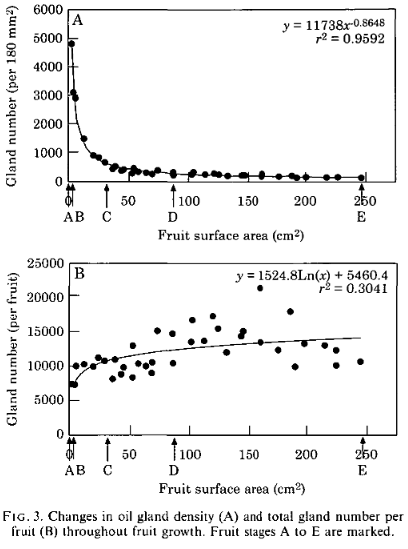
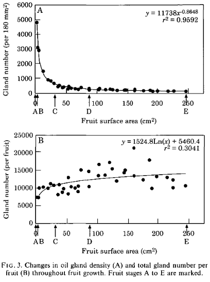

If life gives you lemons, do directional statistics
Citrus work like lego blocks. Roughly speaking, any two citrus can hybridize and produce potentially new citrus varieties. In fact, all citrus that you see in the produce section of the market are hybrids. A grapefruit is actually a cross of a pummelo with a sweet orange. An a sweet orange is a cross of a pummelo with a sweet mandarin. And a sweet mandarin is a cross of a pummelo with a pure mandarin. A pure mandarin crossed with a pummelo can also produce a sour orange. And a sour orange crossed with a citron yields a lemon. You get the picture. Citrus are as promiscuous as it gets.

Credits: Wu et al. (2018)
This large variety of hybridization possibilities corresponds to a variety of citrus fruit shapes. Can we quantify such shape diversity? If we can mathematically describe the shape of both a pummelo and a sweet orange, would I be able to predict that their shape combination yields a grapefruit?
We are especially interested in being able to quantify and characterize the distribution of the oil glands on the citrus fruits. Citrus essential oils are important for the food and perfume industries. Oil glands also play a fundamental role in citrus fruit development. There are plenty of unknowns going forward.
The setup
In collaboration with the Givaudan Citrus Variety Collection at University of California—Riverside, we got access to 158 individual fruit samples comprising 64 citrus varieties. These included all the fundamental citrus (citrons, pure mandarins, pummelos), close relatives (trifoliates, kumquats, microcitrus), and important hybrids (sweet oranges, lemons, etc.) These were X-ray CT scanned at Michigan State University. After a lot of image processing fiddling, we manage to segment out the central column, flesh, rind, skin, and oil glands for each citrus fruit.


We focus on the oil glands. We can represent each oil gland
as point in space where the x,y,z coordinates are the
center of mass of each gland. That is, each citrus fruit now
can be thought as point cloud in space (!) As a sanity check,
we verify that our count of individual oil glands goes in hand
with established literature.
 

Modeling citrus fruits as ellipsoids
It seemed natural to model citrus as ellipsoids —an affine transformation of a sphere. This was done by simply performing ordinary least squares regression to find the best algebraic parameters of the general ellipsoid formula. Next, the point cloud made of all oil gland centers was projected to the best-fit ellipsoid. Finally, we reparameterized these centers in terms of geodetical coordinates —latitude and longitude. But latitude and longitude coordinates can be thought as lying on a unit sphere, as well. We thus have a size-independent common framework to compare all the oil glands for all the citrus fruit varieties. We visualized the oil glands on 2D via two Lambert cylindrical equal-area projections from the north and south poles.

Directional statistics
Now that all our oil gland data can be represented as points on a common unit sphere, we turn to directional statistics. Directional statistics allows us to characterize distributions specifically on circles, spheres, and related surfaces. We can also test whether a collection of points on a sphere follow a known distribution. To this end, we observed that there is no statistical evidence that supports the hypothesis of glands being uniformly distributed. Nor there was evidence in favor of rotational symmetry.


What is the distribution then?
We can compute an empiric distribution via kernel density estimation (KDE). As expected, there is a spherical-specific KDE that we can use. As in the linear case, our KDE will depend on a bandwidth parameter that will determine how smooth our empiric distribution is. We can play around with varying bandwidth parameters and observe which regions show the most dramatic distribution changes.

Future directions
Now that we are convinced that our pipeline enables us to quantify and compare citrus fruit shape, the potential future directions are exciting. To name a few:
- Locate, segment, and phenotype seed tissue.
- Explore more on normal diffusion mechanics and their possible relationship to oil gland distribution.
- Define a measure of similarity of oil gland distributions and compute a pairwise distance matrix for all citrus fruits.
- Compare such distances between distributions to phylogenetic distances.
- Explore alternative ellipsoid-to-sphere algorithms to minimize distortion.
Stay tuned for updates!
¡Published article: Amézquita et al. (2022)!

DOI: 10.1002/ppp3.10333
—
As slides: Presented at CMSE Brown Bag Seminar. October 2022.
As a static poster: Presented at OSUPSS. April 2022.
As a dynamic poster: Presented at OSUPSS. April 2022.
—


——————————
Other research projects
- Global disparities in plant biology research
- Quantification of barley grain morphology
- The shape of citrus fruits and modeling their oil gland distribution
- The crackability of walnuts: all about shape, in a nutshell
- The intersection of Topological Data Analysis and Biology
- Archaeological artifact classification and the Euler Characteristic
- Mapper to unravel the shape of omics data